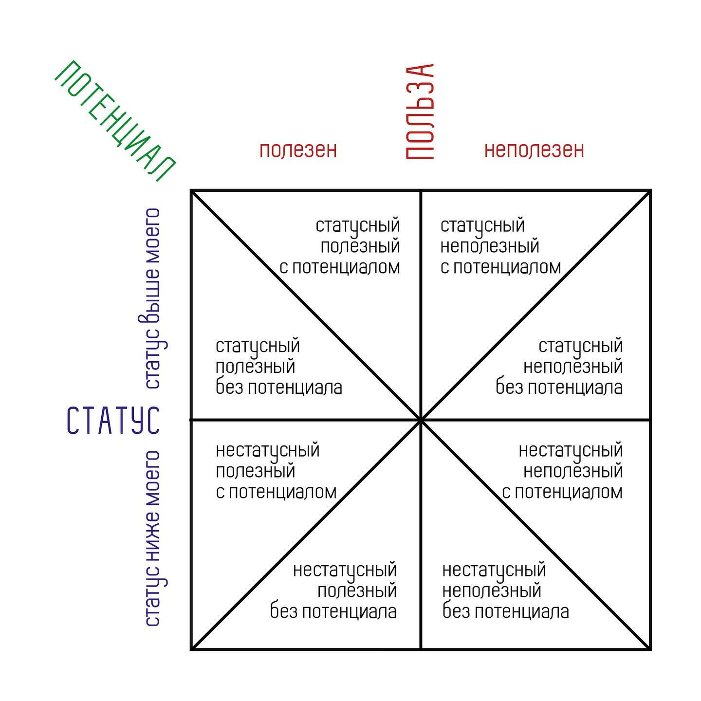

Хочу с вами поделиться одной моделью, сформулировал тут на досуге… была необходимость. Так вот, речь о так называемом балансе поведения. То есть - как мы выстраиваем свое взаимодействие с другими людьми, чем руководствуемся и каким образом видоизменяется наше поведение в зависимости от качеств (параметров) того или иного человека.
Итак, три ключевых параметра: статус, польза, потенциал.
- СТАТУС: он показывает, выше или ниже нас человек в социальной, профессиональной или личной иерархии.
- ПОЛЬЗА: это субъективное ощущение того, насколько человек может быть нам полезен прямо сейчас или в легко обозримой перспективе.
- ПОТЕНЦИАЛ: этот параметр добавляет временной горизонт - способен ли человек развиваться и становиться значимее в будущем.


Вместе эти три параметра создают многомерное пространство восприятия, которое я называл Баланс поведения. На картинке представлена графическая схема квадранта баланса:
- Y (Статус): «Выше меня по статусу» → «Ниже меня по статусу»
- X (Польза): «Полезен мне» → «Не полезен мне»
- Z (Потенциал): «Высокий потенциал» → «Низкий потенциал»
Итого получается 8 секторов, каждый из которых имеет свой характер, потенциал взаимодействия и связанные с ними вызовы (можно было бы описать каждый сектор, но и так уже много текста).
Хочу обратить ваше внимание, что этот механизм работает преимущественно бессознательно. То есть, очень редко кто полностью осознанно и намеренно корректирует свое поведение исходя из четкого понимания статуса/пользы/потенциала «конкретного другого» в моменте. На самом деле, практически никогда. И вот отсюда и вытекает проблема. Она здесь не в том, что это все как-то «бездушно», «неправильно» или «нечестно». Сама по себе модель вполне адекватна. Проблема в другом: поскольку эта штука работает в основном бессознательно (без непосредственного контроля сознания) - она становится (а) источником когнитивных искажений и (б) неявным регулятором этического поведения.
(А) Источник когнитивных искажений: мы склонны приписывать соответствующим секторам (то есть людям, которых мы туда бессознательно помещаем) качества, которые объективно к этим конкретным людям никакого отношения не имеют… как в смысле (+), так и в смысле (-). Пример: высокостатусный человек автоматически кажется более умным, а человек с низким статусом — незначительным. Но это иллюзия.
(Б) Неявный регулятор этического поведения: мы склонны путать прагматику поведения с этикой поведения. Пример: человек полезен — мы к нему добры; человек бесполезен — мы его игнорируем (особенно, если он ниже нас статусом) и даже довольно легко можем позволить себе явное или неявное пренебрежение. Но ведь ценность человека не измеряется его пользой или статусом. И если мы начинаем смотреть на людей только как на «ресурсы», мы теряем не только их, но и частичку себя. Как говорил Бродский, прагматичное равнодушие к другим — это изощренная форма саморазрушения.
В целом, подспудно выстраивать свое поведение на основе изложенного Баланса поведения склонны все люди без исключения. Просто так работает психика. Но тут важно еще вот что - когда в соответствующем обществе полноценно действует сложившаяся традиционная (родовая) или базовая этическая система, она (система) выступает явным регулятором этического поведения. И люди, так или иначе соотносятся в своем поведении (как бы поверх баланса поведения) с принятыми нормами приемлемого/неприемлемого, хорошего/плохого, уместного/неуместного. Однако, когда базовая этическая система в кризисе (разрушена, подверглась интервенции другой системы или вообще не сложилась) - в таком обществе наружу все больше и больше вылазит чистая прагматика Баланса поведения… со всеми его неочевидными минусами.
Впрочем, понимая этот механизм, его характеристики, ограничения и опасности - можно вполне себе иметь выгоды прагматики поведения, при этом оставаясь в поле этики, избегая таким образом, с одной стороны, ненужных и неожиданных проблем, а с другой, не корёжа свою личность равнодушием и «прямолинейно-инструментальным» отношением к другим людям. Даже в условиях кризиса базовой этической системы, каковой мы можем, чего уж тут скрывать, наблюдать вокруг (как в России, так и вообще в мире).